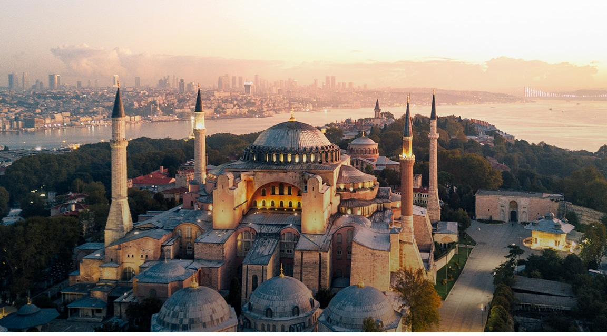
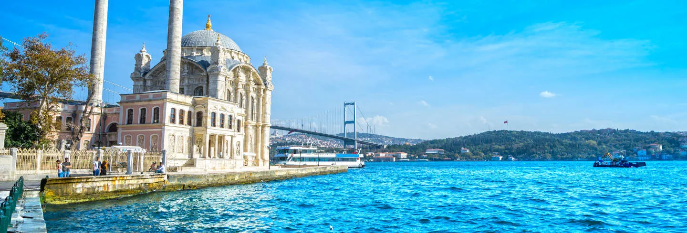
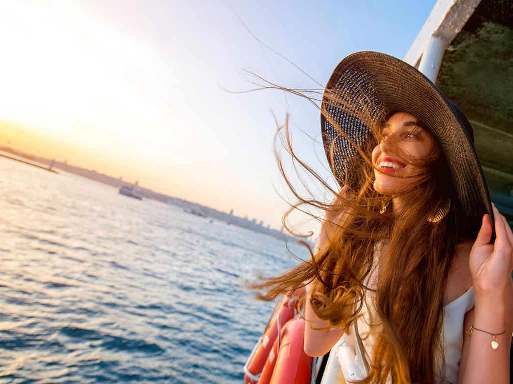
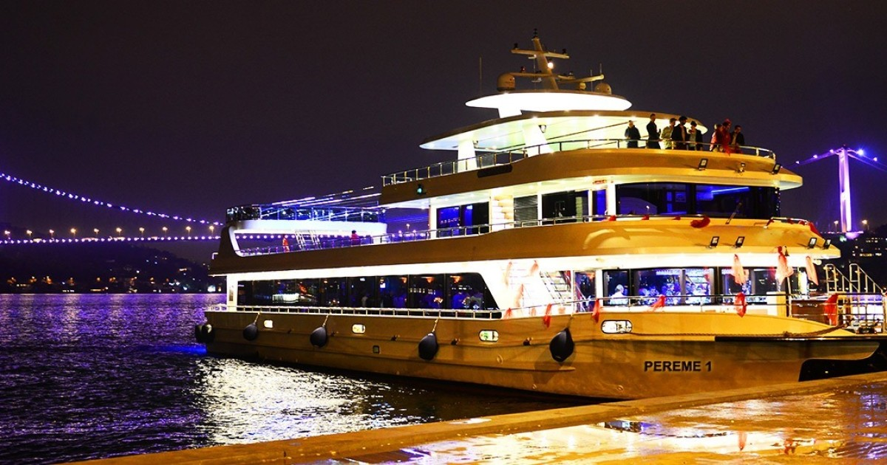

«Si la Tierra fuera un solo estado, Estambul sería su capital»
Napoleón Bonaparte.

Estambul tiene un encanto intemporal que le debe mucho a su interesante historia. Conocida en el pasado como Bizancio y Constantinopla, la ciudad ha sido el centro de varios imperios ancestrales, de los cuales todavía conserva grandes maravillas arquitectónicas, como Hagia Sophia, que resiste imperturbable el paso del tiempo y sigue provocando admiración por su impresionante despliegue de mosaicos. Además de lugares de interés histórico, en el centro y las afueras de Estambul encontrarás rascacielos modernos y centros comerciales donde tomar un descanso. Desde algunos de ellos se pueden contemplar unas vistas imponentes de la ciudad y el estrecho del Bósforo.
El paseo en barco por el Bósforo es una de las actividades que no podéis perderos en Estambul, los precios son realmente asequibles y las vistas, tanto de día como de noche, son fantásticas.
Durante el recorrido por el Bósforo veréis varios palacios (entre ellos Bylerbeyi, Ciragan y Dolmabahçe) y disfrutaréis de la animada vida de Estambul.
A lo largo de todo el trayecto comprobaréis cómo el ambiente de la ciudad no se reduce sólo al centro histórico (especialmente en verano).
  
El Bósforo es un estrecho que conecta el Mar Negro con el Mar de Mármara separando Estambul en dos partes: la europea y la asiática. La longitud total del estrecho es de 30 kilómetros y la anchura va desde los 700 metros hasta los casi 4 kilómetros de la salida al Mar Negro.
La forma más cómoda de reservar el crucero es hacerlo directamente a través de la web antes del viaje:
¡Si algo te puedo asegurar es que no te aburrirás!
Estambul es una ciudad inmensa, la más poblada de Europa. Es tal la cantidad de lugares atractivos e interesantes que ofrece que es literalmente imposible conocerlos todos en una visita de unos pocos días, siempre quedarán cosas pendientes que justificarán una nueva visita. En esta guía te recomiendo visitar 5 de los lugares más atractivos de la ciudad
El Gran Bazar evoca suspiros y es que la gran variedad de productos que allí se ofrecen resultan interesantes. Nosotros somos el vivo ejemplo de la inspiración que produce visitarlo, y fue así como nació nuestroGranTé,como inspiración para ofrecerles salud y bienestar con la mejor y más amplia variedad de té turcos.
Ya te estarás diciendo, ¡vale! la ciudad luce genial, pero debe ser costosa.
Y yo te digo que si la comparas con España los precios son más bajos, aunque si le comparas con los precios del resto de Turquía, sí que son bastante más elevados.
Aquí te dejo algunos ejemplos para que te hagais una idea:
Producto/servicio |
Precio(€) |
| Billete de tranvía | 0,20€ |
| Refresco | |
| Hab. doble en el centro | 7,90€ por noche |
| Cerveza de 1/2 litro | 0,60€ |
| Kebab | 0,40€ |
| Visita a monumentos | 0,80€ |
| Taxi desde el aeropuerto | 3,20€ |
| Cena para 2 personas(sin bebida) |
Viajar informado es viajar más seguro. Antes de viajar a Estambul, te aconsejoconsultar las recomendacionesde viaje delServicio al ciudadano/Gobierno de España.
CopyrightRecoveco.Todos los derechos reservados. 2021